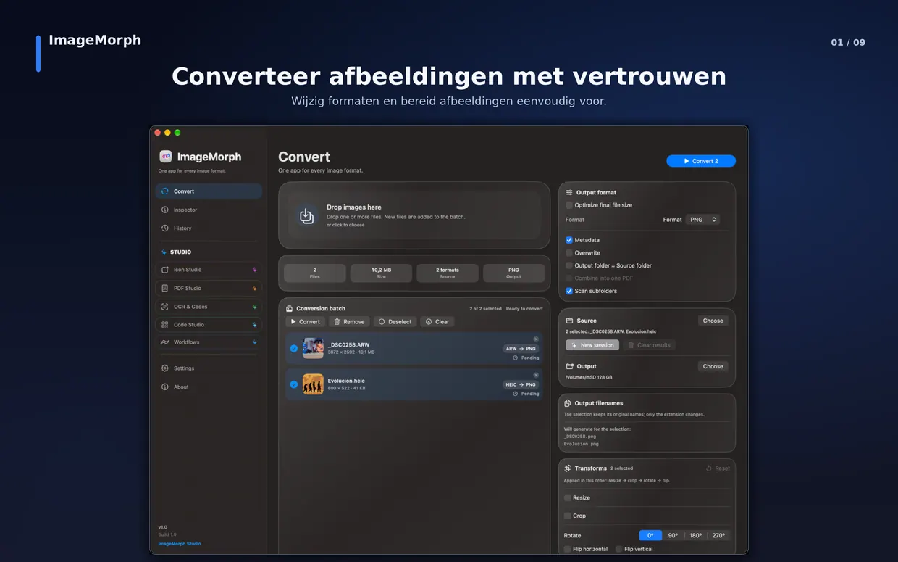
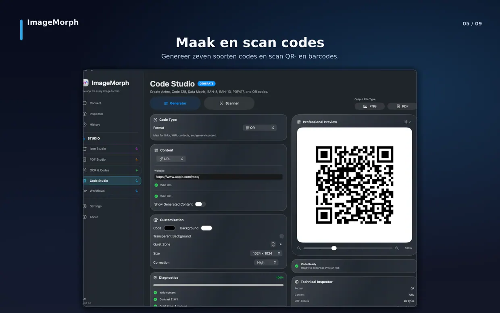
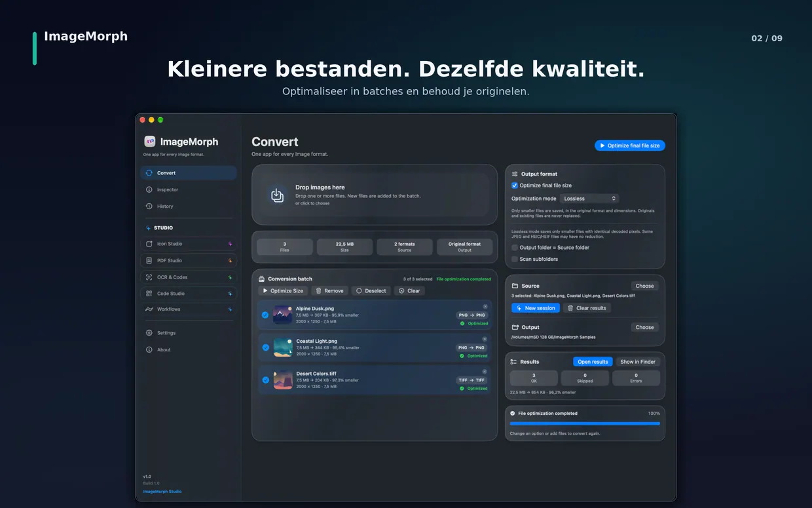
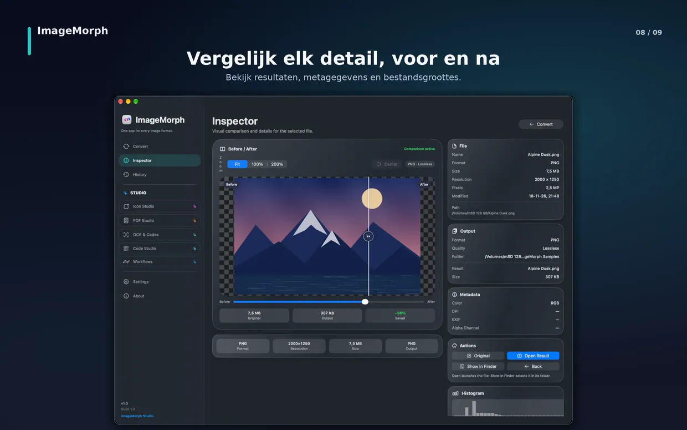
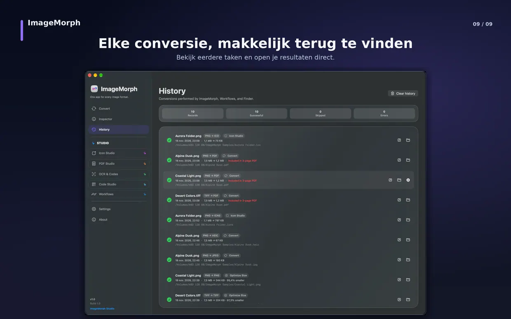
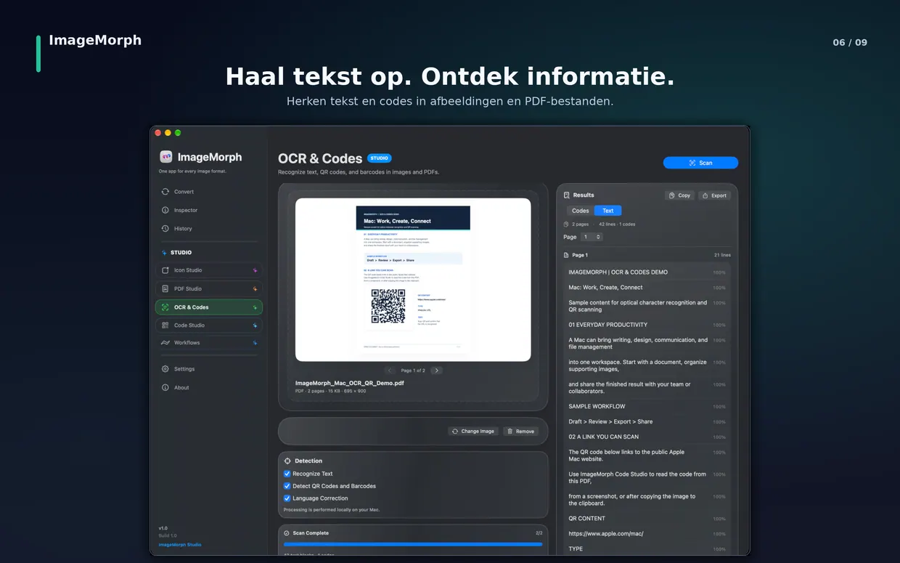
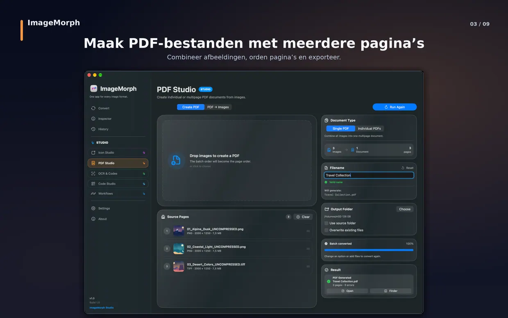
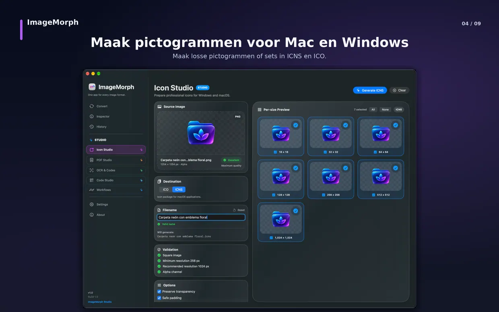
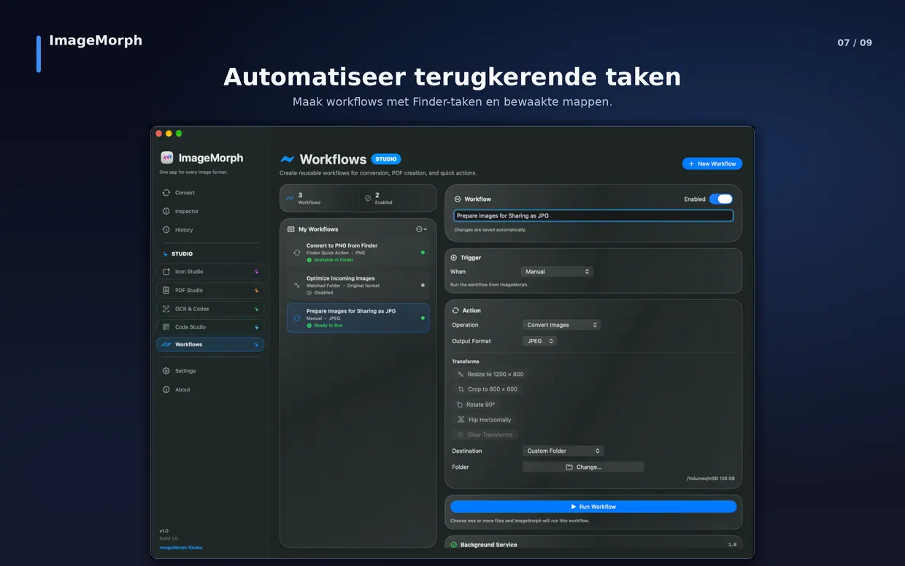

JPEG · PNG · HEIC · TIFF
JPEG, PNG, HEIC en TIFF afzonderlijk of in batches.

Converteer, schaal en optimaliseer afbeeldingen. Maak PDF’s en automatiseer herhalende taken op je Mac.
Lancering in de Mac App Store wordt voorbereid.

Converteer, schaal en optimaliseer afbeeldingen. Maak PDF’s en automatiseer herhalende taken op je Mac.

Herken tekst in afbeeldingen en PDF’s met meerdere pagina’s, controleer en exporteer resultaten.
Lees QR-codes uit e-mail of PDF op je Mac en bekijk de bestemming voordat je de link opent.


Een URL-voorbeeld garandeert geen veilige website. Controleer het domein en deel geen gegevens op onverwachte sites.
Ontdek codetoolsJPEG, PNG, HEIC en TIFF afzonderlijk of in batches.

Pas de afmetingen en verhoudingen van afbeeldingen aan, met behoud van de beeldverhouding wanneer gewenst.

Ondersteunde verliesvrije of verliesgevende optimalisatie; alleen uitvoeren als kleiner.

Bekijk formaat, afmetingen en metadata. Vergelijk na conversie het resultaat met het origineel.

Bekijk eerdere bewerkingen en open de uitvoerbestanden of toon ze in Finder zolang ze nog bestaan.

Studio bundelt OCR, codeherkenning, PDF-gereedschap, pictogrammen en automatisering. Eenmalige aankoop, geen abonnement.
Studio is een optionele permanente in-app-aankoop.

Herken tekst in afbeeldingen en PDF’s met meerdere pagina’s, controleer en exporteer resultaten.


Lees codes uit het klembord, afbeeldingen, PDF’s of mappen, of leg ze vast met compatibele camera’s en scanners. Controleer inhoud en links voordat je ze opent.


Maak PDF’s met meerdere pagina’s, exporteer pagina’s als afbeeldingen en pas de rotatie aan.

Maak ICO- en ICNS-bestanden en controleer alle formaten vóór export.


Maak QR, Code128, Data Matrix, EAN, PDF417 en Aztec als PNG of PDF.

Sla workflows op, bewaak mappen en start Finder-acties.

| Functie | Free | Studio |
|---|---|---|
| Omzetten, schalen, optimaliseren | Inbegrepen | Inbegrepen |
| Wachtrij, Inspector, vergelijking, histogram | Inbegrepen | Inbegrepen |
| Eenvoudige PDF-creatie | Inbegrepen | Inbegrepen |
| PDF Studio en export van pagina’s | — | Inbegrepen |
| OCR en codeherkenning | — | Inbegrepen |
| Codegeneratie en camera-/scanneropname | — | Inbegrepen |
| ICO- en ICNS-sets | — | Inbegrepen |
| Workflows, bewaakte mappen, Finder-snelacties | — | Inbegrepen |
Lokale prijs, Studio-toegang en proefgeschiktheid staan in de app. Aankopen en herstel verlopen via Apple.
Conversie, optimalisatie, PDF-aanmaak en OCR vinden op je Mac plaats. De inhoud van bestanden gaat niet naar de Studio-proefservice. Toegang tot bestanden, mappen, camera’s en scanners vereist toestemming; instellingen, geschiedenis, bladwijzers en logs met namen, paden of fouten kunnen lokaal blijven.
Lees het privacybeleid